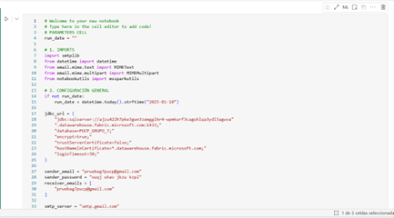
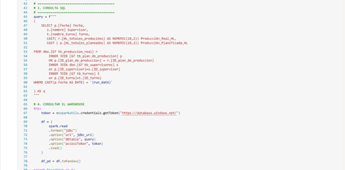
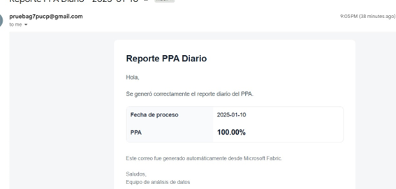
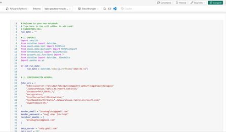
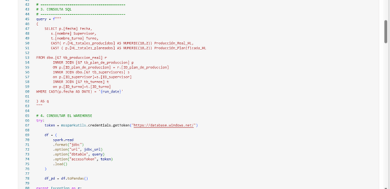
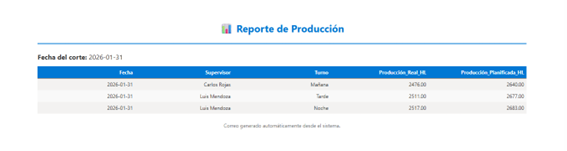

🔄 Transformación
ETL Layer
El sistema emplea un dataflow automatizado de gestión de datos que integra diversas capas tecnológicas de Microsoft. Este flujo garantiza la adecuada integración, transformación y disponibilidad de la información para apoyar la toma de decisiones dentro de la organización.
Origen de Datos
La información es ingresada mediante la aplicación, donde los usuarios registran operaciones relacionadas con la producción planeada y real del día. Posteriormente, estos datos se almacenan en Azure SQL Database.
Pipeline de Transformación (Dataflow)
El proceso ETL (extracción, transformación y carga) se ejecuta mediante un Dataflow en Microsoft Fabric, encargado de depurar, estandarizar y enriquecer la información antes de almacenarla en el Data Warehouse.
Automatización con Notebooks
Después de finalizar la etapa de transformación, se ejecutan Notebooks en Python con el fin de que las notificaciones diarias sean enviadas a los supervisores al inicio del día para el correspondiente análisis.
📧 Envío de correo 1 — PPA Diario
El primer envío consiste en el cálculo del PPA diario al corte del día anterior. El cálculo se realiza mediante consulta SQL a las tablas del modelo, generando un correo automático como se visualiza a continuación:



📧 Envío de correo 2 — Reporte de Supervisores
El segundo envío consiste en la generación de un reporte con fecha al corte del día anterior que contiene los nombres de los supervisores y sus turnos asociados. La finalidad es comparar los Hectolitros planificados con la producción real.


